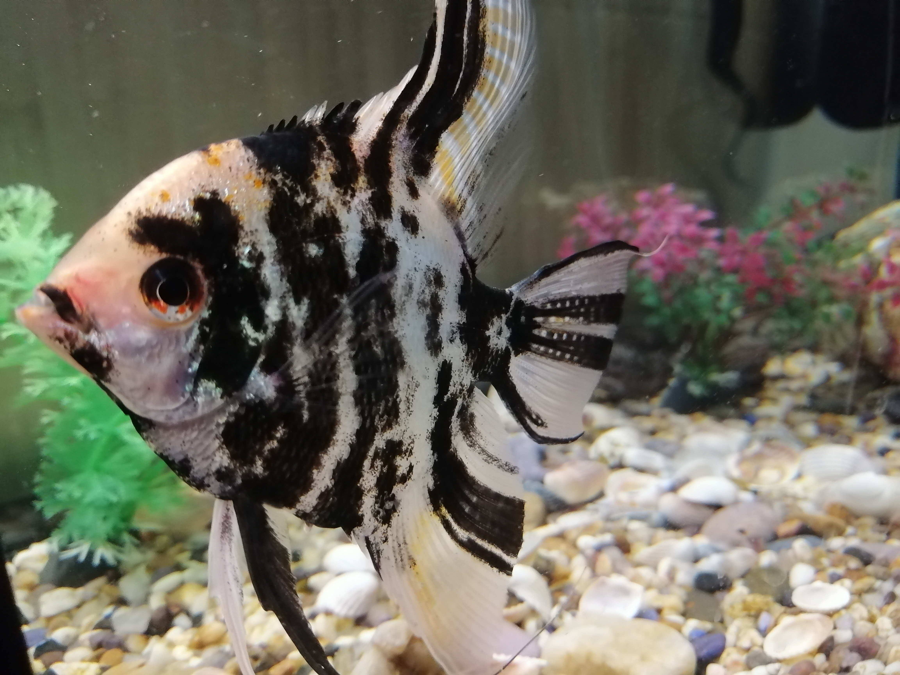

Скалярія — акваріумна рибка, родом із центральної частини Південної Америки. Вони водяться у водоймах, густо зарослих рослинами, де вони набули форми, що виділяє їх поміж інших мешканців підводного світу. Назва скалярія дослівно можна перекласти як крилатий лист, на який вона дуже схожа за своєю формою. А в Європі їх часто називають скалярія зелений ангел.
